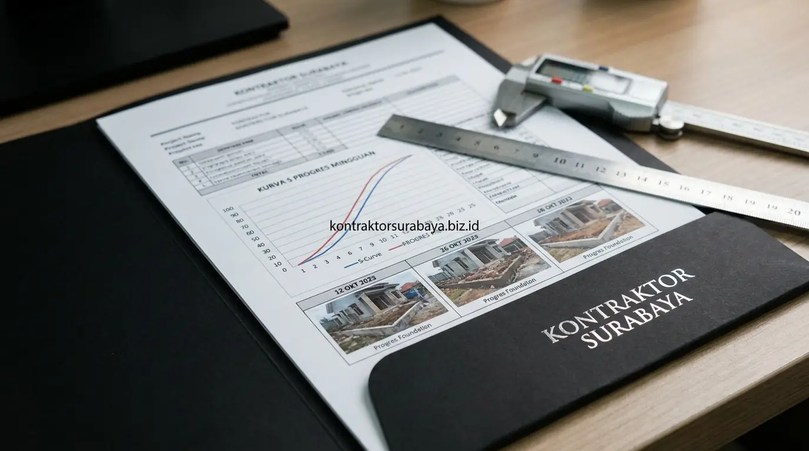

Bagi sebagian besar pengusaha, eksekutif, dan profesional di Surabaya, Sidoarjo, dan Gresik, membangun rumah tinggal adalah pencapaian hidup yang membanggakan. Namun, rutinitas pekerjaan yang padat kerap menjadi kendala utama: bagaimana memastikan tukang bekerja sesuai spesifikasi teknis dan jadwal tanpa harus mengorbankan jam kerja berharga untuk menunggui tukang di lokasi proyek setiap hari?
Kekhawatiran akan mutu material yang dioplos, pembesian yang dikurangi, atau tukang yang bermalas-malasan sering kali menghantui pemilik rumah yang sibuk. Di sinilah pentingnya bermitra dengan jasa kontraktor rumah Surabaya resmi yang memiliki Standard Operating Procedure (SOP) pelaporan berbasis teknologi. Dengan sistem yang terstruktur, Anda dapat memegang kendali penuh atas kualitas dan jadwal proyek langsung dari genggaman ponsel pintar Anda.
1. Kenapa Pemantauan Progres Tetap Penting Meski Tidak Bisa Sering ke Lokasi
Tanpa pemantauan yang konsisten, klien berisiko kehilangan kendali atas kesesuaian pekerjaan dengan Rencana Anggaran Biaya (RAB) dan gambar kerja Detail Engineering Design (DED) yang telah disepakati, meskipun secara fisik Anda tidak selalu berada di lokasi proyek.
Kesibukan yang membatasi waktu kunjungan ke tapak bukan berarti Anda harus menyerahkan proyek 100% tanpa pengawasan (blind trust). Sistem pengawasan jarak jauh yang profesional justru memfilter informasi teknis yang rumit menjadi ringkasan yang jelas, objektif, dan dapat dipertanggungjawabkan secara hukum kontrak, sehingga Anda tetap tenang menjalankan bisnis utama Anda.
2. Laporan Foto dan Video Berkala sebagai Alat Pemantauan Jarak Jauh
Dokumentasi foto resolusi tinggi dan rekaman video yang dikirim secara berkala pada setiap tahapan penting pekerjaan membantu klien memverifikasi kesesuaian mutu material dan progres fisik tanpa perlu hadir di lokasi setiap saat.
Foto yang diambil dari sudut pandang (angle) tetap sebelum dan sesudah tahap kritis—seperti perakitan pembesian pondasi cakar ayam, pemasangan bekisting, pembongkaran dinding, hingga pengecoran balok beton—memberi bukti visual yang otentik. Anda dapat dengan mudah membandingkan fisik di foto dengan spesifikasi merek material SNI yang tertera pada lembar kesepakatan SPH kontraktor.
3. Penggunaan Grup Komunikasi untuk Update Harian Progres Proyek
Grup komunikasi digital (seperti WhatsApp Project Group khusus) memungkinkan Site Manager atau Supervisor lapangan mengirimkan laporan harian (daily log) mengenai jumlah tukang yang hadir, cuaca di lokasi, material yang tiba, serta rincian item yang dikerjakan hari itu.
Komunikasi interaktif ini membuka ruang konsultasi cepat dua arah. Apabila Anda menemukan kejanggalan pada foto atau ingin menanyakan detail tertentu, Site Manager dapat langsung merespons dan melakukan klarifikasi teknis di lapangan, mencegah terjadinya salah bongkar yang memicu pembengkakan biaya renovasi atau bangun baru.
4. Komparasi Sistem Pengawasan Proyek: Kontraktor Modern vs Pemborong Tradisional
Berikut tabel perbandingan mekanisme pengawasan dan pelaporan proyek bagi pemilik rumah yang sibuk:
| Mekanisme Monitoring | Kontraktor Profesional (Modern Terstruktur) | Pemborong Tradisional (Konvensional) | Manfaat untuk Klien Sibuk |
|---|---|---|---|
| Pelaporan Harian & Foto | Foto bertanggal/timestamp & video progres via grup WhatsApp | Jarang ada update, klien harus menelepon atau datang sendiri | Bukti visual real-time tanpa menyita waktu kerja klien. |
| Alat Kontrol Jadwal | Kurva S mingguan memetakan target vs realisasi fisik (%) | Hanya perkiraan lisan ("sudah mau selesai pak") tanpa data | Mencegah proyek molor dengan deteksi dini deviasi jadwal. |
| Pengawasan Mutu (QC) | Site Engineer bersertifikat menerapkan SOP mutu struktur | Mengandalkan kebiasaan mandor tanpa checklist mutu | Kualitas besi, beton, dan plesteran terjamin standar SNI. |
| Skema Pembayaran Termin | Pencairan termin hanya saat berita acara progres fisik tercapai | Sering meminta uang muka tambahan sebelum progres jelas | Arus kas aman, dana hanya cair sesuai hasil nyata di tapak. |

5. Jadwal Kurva S sebagai Acuan Progres yang Terukur
Kurva S menampilkan grafik hubungan antara bobot persentase kumulatif rencana (plan) terhadap realisasi fisik aktual (actual) sepanjang durasi proyek pembangunan rumah.
Dengan adanya Kurva S, Anda tidak lagi menilai kemajuan proyek berdasarkan perkiraan samar. Apabila pada minggu ke-8 target rencana adalah 35% namun realisasi baru mencapai 28%, Site Manager wajib segera membuat strategi percepatan (recovery plan), seperti penambahan tenaga kerja terampil atau lembur terarah, agar target serah terima kunci rumah tidak bergeser dari perjanjian kontrak.
6. Fitur yang Perlu Ada dalam Sistem Pelaporan Kontraktor
Klien dengan mobilitas tinggi wajib memastikan kontraktor yang dipilih menyediakan empat fitur pelaporan standar berikut:
- Dokumentasi Foto Berstempel Waktu & GPS (Timestamp): Memastikan foto benar-benar diambil pada tanggal dan lokasi proyek yang bersangkutan.
- Laporan Mingguan Tertulis (Weekly Progress Report): Rangkuman tertulis yang menjabarkan persentase capaian per divisi pekerjaan (struktur, dinding, MEP, finishing).
- Akses Terbuka Dokumen Gambar Kerja & Kurva S: File digital tersimpan di cloud atau grup yang mudah diakses kapan saja untuk evaluasi bersama keluarga.
- Penanggung Jawab Lapangan (Single Point of Contact): Kontak Site Engineer yang tanggap menjawab pertanyaan teknis tanpa perlu menghubungi tukang satu per satu.
7. Kapan Klien Tetap Perlu Datang Langsung ke Lokasi Proyek?
Meskipun sistem pemantauan online berjalan sangat lancar, kehadiran fisik pemilik rumah tetap sangat disarankan pada 4 momen penting berikut:
- Sebelum Pengecoran Struktur Utama (Pre-Pouring Inspection): Memeriksa kerapian ikatan besi kolom/balok/dak beton dan letak sparing pipa instalasi listrik & air sebelum tertutup cor semen.
- Approval Sampel Material Finishing (Mock-up Approval): Melihat langsung contoh warna cat dinding, tekstur granit lantai, dan motif kayu agar sesuai selera estetika pencahayaan alami di lokasi.
- Diskusi Pekerjaan Tambah-Kurang (Change Order): Menginspeksi kondisi eksisting bila Anda memutuskan merubah perletakan ruangan seperti pada desain rumah 2 lantai keluarga muda.
- Inspeksi Akhir & Uji Fungsi (Final Handover Checklist): Melakukan serah terima kunci dengan menguji seluruh kran air, MCB listrik, kunci pintu, dan kemiringan lantai kamar mandi.
8. Kesalahan yang Membuat Pemantauan Jarak Jauh Tidak Efektif
Hindari beberapa kekeliruan umum saat mengawasi proyek secara daring:
- Hanya Mengandalkan Komunikasi Lisan via Telepon: Tanpa rekapitulasi tertulis, kesepakatan lisan rawan terlupakan dan memicu perselisihan tagihan.
- Tidak Menetapkan Jadwal Rutin Laporan Mingguan: Mengakibatkan Anda baru menyadari keterlambatan saat batas waktu kontrak sudah hampir habis.
- Mengabaikan Dokumen Gambar Kerja DED: Tidak membandingkan foto laporan dengan cetak biru arsitektur yang dibuat oleh jasa arsitek rumah profesional.
- Mencairkan Pembayaran Termin Tanpa Berita Acara Progres: Membayar berdasarkan permintaan pemborong, bukan berdasarkan persentase fisik yang terverifikasi.
"Pengawasan proyek yang sukses di era modern bukan tentang seberapa sering Anda berdiri di tengah debu bangunan, melainkan tentang seberapa transparan sistem pelaporan data yang dihadirkan oleh kontraktor Anda." — Erlang Sinatrya, Lead Project Engineer Kontraktor Surabaya
Membangun rumah bersama Kontraktor Surabaya memberikan Anda ketenangan pikiran penuh berkat transparansi pelaporan Kurva S mingguan, update grup WhatsApp harian, dan jaminan garansi pemeliharaan tertulis. Pelajari sistem kerja kami di halaman jasa kontraktor rumah, jelajahi bukti fisik hasil bangun kami di galeri portofolio proyek, atau kenali tim ahli kami di halaman tentang kami.